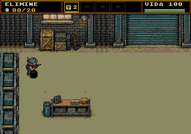
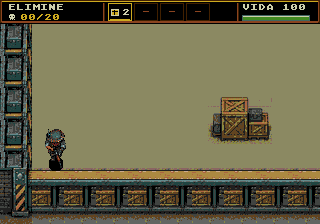
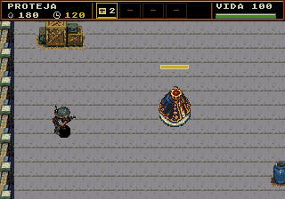
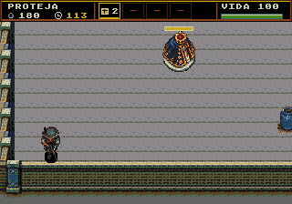

Fases 4 e 5 · Mais espaço para combater
O campo útil passou de 160 para 288 pixels de altura (+80%). Os cenários agora têm 448 pixels de altura total. Piso e laterais repetem os mesmos módulos nativos, com os obstáculos redistribuídos e o limite inferior preservado.
Para jogar: Fase Teste → Campanha → fase 4 ou fase 5. Esta página mostra a composição completa e capturas reais da ROM em Genesis Plus GX.
Área útil vertical: 288 pxVRAM de cenário: mesmos tilesROM: 2,5 MiB
4 · Limpar o galpão
Mapa de 512 × 448 px. Duas bancadas em alturas diferentes e um palete próximo ao setor inferior distribuem as rotas de combate. Objetivo mantido: eliminar 20 insetos; até quatro inimigos ativos.

Entrada e bancada superior.
Nova área inferior, palete e parede de fundo.5 · Proteger a Santa
Mapa de 384 × 448 px. A Santa foi reposicionada junto com sua colisão, indicador e restauração do piso. O novo espaço permite circular por cima e por baixo do objetivo. A câmera alcança o rodapé sem esconder a Santa atrás do HUD ao sul. Objetivo mantido: resistir por dois minutos, com até três inimigos ativos e as rotas 6A/6B preservadas.

Posição inicial e espaço de defesa.
Limite inferior totalmente visível; Santa acima do HUD.Verificação na ROM de produção
Revisão do cenário inteiro e das câmeras norte, centro e sul. A exportação reconstrói todos os pixels; sem substituição de tiles por aproximação. Testes por controle verificam 24 faces de obstáculos, oito limites externos, rolagem nos dois sentidos e pausa. Contato nativo confirma o dano e a restauração da Santa na nova posição.
| Teste de carga | NTSC | PAL |
|---|
| Fase 4 · 4 inimigos / 6 tiros por grupo | 60 FPS | 50 FPS |
| Fase 5 · 3 inimigos / 6 tiros por grupo | 60 FPS | 50 FPS |
Carga medida por 20 segundos por fase/região, com patrulha vertical, IA e animações ativas. O teste repõe tiros inativos e protege a vida para isolar desempenho; não certifica o balanceamento humano. O relógio completo de dois minutos foi verificado separadamente com inimigos isolados. Hardware físico não testado.